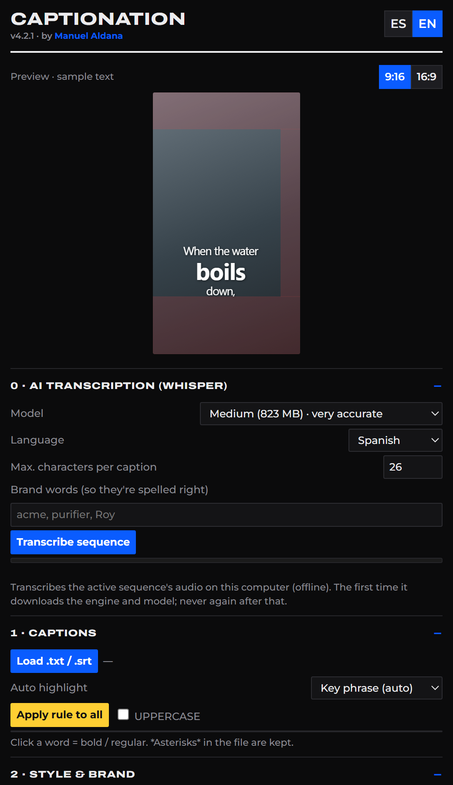
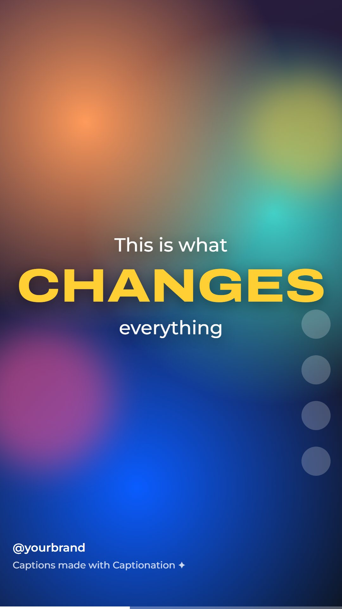
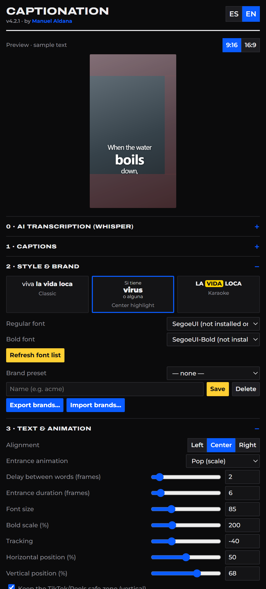

Features
Whisper runs on your own computer. Your footage never leaves it. Respects In/Out points or the work area.
Picks the important word and makes it big. Click any word to change it.
Highlights each word right as it's spoken — with a color box or just a color change.
Fonts, colors, glow and the TikTok/Reels safe zone, before you insert anything.
Save a style per client or campaign and share it with your team as a file.
Pop, rise, fade, blur, typewriter, drop and zoom. Plus glow, shadow, stroke and background.
See it



Install
- Download the installer
A single .exe under 1 MB. No admin rights needed.
- Close Premiere and After Effects, then run it
If Windows shows "Windows protected your PC": More info → Run anyway.
- Open the panel
Window → Extensions → Captionation, in Premiere Pro or After Effects.
- Transcribe and insert
Hit "Transcribe", check the preview, then "Insert captions". Done.
FAQ
Is it really free?
Yes, forever. No subscription, no watermark, no account. Use it on client work too. It's also open source under the MIT license — see the code on GitHub.
Windows says "Windows protected your PC". Is it safe?
Yes. It shows up because the installer doesn't carry a paid code-signing certificate. Click More info and then Run anyway. It only happens the first time.
Do I need internet to transcribe?
Only the first time: the panel downloads the AI engine and language model (about 820 MB with the recommended one). After that it works fully offline.
Which versions are supported?
Premiere Pro and After Effects 2025 and 2026, on Windows 10 or 11.
What about Mac?
Not yet — it's on the way.
What language is the panel in?
English and Spanish — switch with the ES / EN buttons at the top of the panel. Transcription works in Spanish, English and Portuguese, or with auto-detect.
Can I use my own brand fonts and colors?
Yes. The panel lists every font on your computer and saves brand presets you can export to your team.